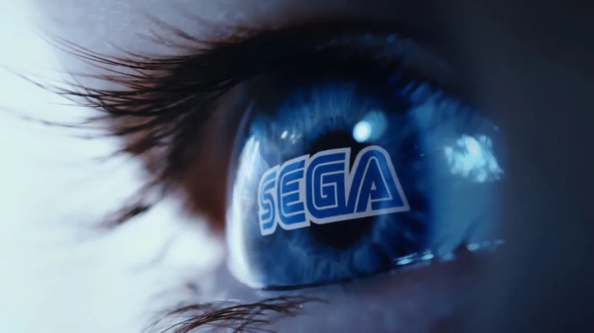

Luiso · 7 de septiembre de 2026 · 3 min de lectura
SEGA finalmente explicó qué llevó a la compañía a cancelar su ambicioso proyecto conocido como “Super Game”, una iniciativa que había sido presentada como uno de sus grandes objetivos para los años siguientes y que permaneció en desarrollo durante aproximadamente cinco años.
El proyecto había sido anunciado originalmente en mayo de 2021. La idea contemplaba desarrollar múltiples títulos AAA con características de juego como servicio, utilizando distintas tecnologías de SEGA y buscando superar el modelo tradicional de lanzamiento de videojuegos.
Meses después, en noviembre de ese mismo año, la compañía había señalado que estaba dispuesta a invertir hasta 100.000 millones de yenes, unos 882 millones de dólares de aquella época, durante cinco años para alcanzar sus objetivos con Super Game.
Sin embargo, en mayo de 2026 SEGA confirmó discretamente la cancelación del proyecto dentro de su presentación de resultados financieros, en una sección dedicada a la revisión de sus iniciativas relacionadas con los juegos como servicio.
Ahora, Shuji Utsumi explicó con mayor detalle qué ocurrió durante el desarrollo. Según el ejecutivo, el objetivo era crear un juego como servicio capaz de convertirse en un éxito global, pero el análisis realizado por la compañía reveló que los costos necesarios para desarrollar y operar un proyecto de semejante escala serían mucho mayores de lo esperado.
"A medida que avanzamos con nuestro análisis, nos dimos cuenta de que la escala de inversión y operaciones tendría que crecer enormemente para estar a la altura del servicio", explicó Utsumi en una entrevista con Nikkei.
La conclusión de SEGA fue que continuar con el proyecto implicaba un riesgo financiero demasiado elevado en el contexto actual de la industria. Por ese motivo, decidió detener Super Game, aunque la compañía no considera que el mercado de los juegos como servicio haya dejado de ser una oportunidad.
"Todavía creo que existe una oportunidad de negocio aquí y continuaremos buscando aprovecharla", afirmó el presidente de SEGA.
La cancelación de Super Game no significa que SEGA haya decidido abandonar por completo el modelo. La compañía continúa trabajando con proyectos que utilizan una estructura de servicio a largo plazo, entre ellos Phantasy Star Online 2: New Genesis, Sega Football Club Champions 2026 y Hatsune Miku: Colorful Stage.
Además, Total War: Warhammer 40,000, desarrollado por Creative Assembly, también apunta a utilizar un modelo de expansión continua después de su lanzamiento. El estudio tiene previsto realizar una beta cerrada del proyecto durante este año.
La decisión se produce en un mercado cada vez más complicado para los grandes juegos como servicio. Los elevados costos de desarrollo y mantenimiento, sumados a la dificultad de conseguir que los jugadores abandonen títulos consolidados como Fortnite y Roblox, aumentaron considerablemente el riesgo de este tipo de proyectos.
SEGA ya había experimentado las dificultades de este modelo con Hyenas, el shooter desarrollado por Creative Assembly que fue cancelado en 2023 después de varios años de desarrollo y que provocó una revisión de las operaciones europeas de la compañía.
Mientras tanto, la compañía continúa apostando por el regreso de franquicias clásicas como Crazy Taxi y Jet Set Radio, proyectos que no fueron afectados por la cancelación de Super Game.